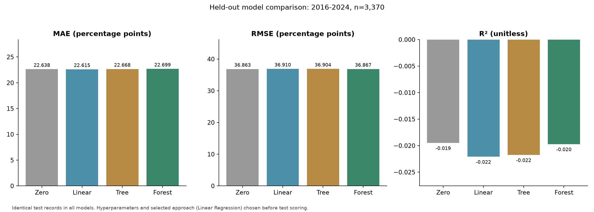
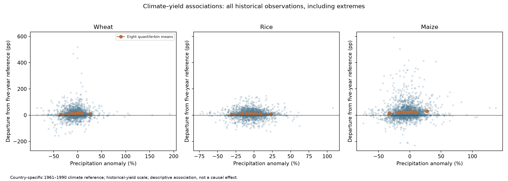
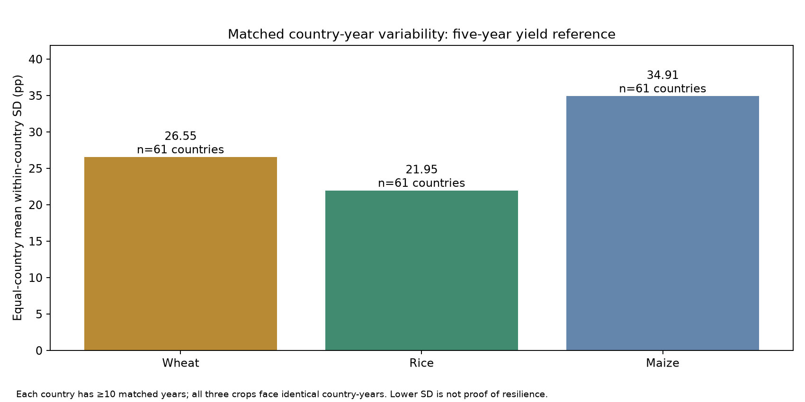

A stronger baseline matters.
Recent yield history improved historical benchmarks. Annual climate inputs did not consistently add skill beyond matched no-climate models.
Global model evidence →Agriculture & Climate Resilience
How do unusually high temperatures and low rainfall relate to crop yield variability, and which selected crops exhibit the greatest yield stability?
ICT324 — Introduction to Data Warehousing and Data Mining
Evidence reviewed
A global study of wheat, rice and maize, with mainland Southeast Asia as a secondary case study.
Reliable yields matter. So does knowing what our data can actually tell us.
Temperature and water availability are relevant to crop development. We investigate how unusually warm and dry years relate to yield variation, without assuming that every such year causes a decline.
We compare predictive models against simple baselines, examine climate–yield associations, and compare crop variability on matched country-years. A multi-country perspective helps us avoid treating one national pattern as a global rule.
We report weak results too. This is a research journal, not an operational forecasting service.
Recent yield history improved historical benchmarks. Annual climate inputs did not consistently add skill beyond matched no-climate models.
Global model evidence →Rice varied less numerically overall. Rice–wheat separation and combined heat/dry rankings remain uncertain.
Matched crop comparison →Smaller models helped some rice/maize comparisons. Fertilizer gains depended on country and period.
Regional evidence →Three members working together on Agriculture & Climate Resilience.
Proposed responsibility assignments. These should be reviewed by the team before publication.
Team Leader & Machine Learning Developer
Project coordination, Python programming, dataset integration, machine learning, model evaluation and technical documentation.
Data Research & Analysis Specialist
Dataset research, data quality assessment, exploratory data analysis, visualization and interpretation.
Research Documentation & Presentation Coordinator
Literature review, academic documentation, CRISP-DM reporting, website content and presentation preparation.
Downloaded observations, preserved metadata and explicit coverage limits. Open a count or source card for context.
| Crop | Records | Countries & territories | Observed years |
|---|
Coverage is uneven. The only 2025 crop record is US maize, outside model evaluation. A year range does not imply that every country has every year.
YieldTonnes per hectare (t/ha)
TemperatureAnnual 2-m air temperature, °C
PrecipitationAnnual rain + snow water equivalent, mm
Our World in Data processes and distributes these exports. FAO and supplemental crop sources, and ERA5/Copernicus climate estimates, are the upstream providers. We did not extract ERA5 grids ourselves.
Keep source-table rows, crop records and national country-years distinct.
Across five crop and weather tables; not unique crop observations.
Weather separately forms 12,545 unique country-years.
Many crop rows match one weather record, without row multiplication.
752 unmatched crop rows remain in an exclusion audit.
23,412 cleaned crop records were considered. Complete climate was unavailable for 752, leaving 22,660 records.
Save CSVs, metadata, retrieval dates and hashes.
Check measurement columns, types, units, missing values and duplicates.
Use current ISO3 codes, integer years and explicit crop labels. Do not guess historical-country mappings.
Require finite plausible values. Retain genuine zeros and flagged outliers; do not replace missing values with zero.
Join unique climate keys, then integrate crop rows many-to-one.
Log exclusions and verify unique country/year/crop keys and raw-value lineage.
Subtract each country's 1961–1990 mean, with at least 20 reference values. Later models also standardize by its SD.
Calculate percentage departure from the same historical precipitation reference.
Compare an earlier full-history line, recent 20-year line and five-year mean.
Keep M3 conventional anomalies separate from later historical-scale deviations.
Fit references, scalers and encoders on permitted earlier data only. Freeze references within validation blocks.
Save eligibility and exclusions; use identical observations within every feature comparison.
Six phases connect the question to the evidence. Evaluation includes explaining why a model did not improve.
GitHub Pages communicates our research. It does not run a forecasting backend or a yield-prediction API.
The original final-test results are preserved, including negative R².
A zero-anomaly baseline predicts the yield trend. Linear Regression fits a weighted linear relationship. A Decision Tree splits records into groups; a Random Forest averages trees. Later regional Ridge Regression uses a penalty to stabilize a small, correlated design.
M3 uses 100 × (yield − expected) / expected, with a country/crop trend fitted on earlier data and expected yield above 0.1 t/ha. Errors are conventional yield-anomaly percentage points.
MAEAverage absolute error. Lower is better.
RMSEPenalizes large misses more. Lower is better.
R²Compares squared error with observed variation around the evaluation mean. It can be negative.
Regression uses error measures, not classification accuracy. R² is not the percentage of predictions that are correct.
For observed target y, predicted target ŷ and n evaluated records: MAE = sum(|y − ŷ|) / n; RMSE = sqrt(sum((y − ŷ)²) / n); R² = 1 − sum((y − ŷ)²) / sum((y − mean(y))²). The evaluation mean in R² is a mathematical comparison, not a predictor fitted using future outcomes. R² is undefined when the evaluated outcome has no variation.
Original tuning used expanding historical windows: train through 1995, 2002 and 2009; validate on 1996–2002, 2003–2009 and 2010–2015. Observation-weighted validation MAE selected Linear Regression. Numeric scaling and country/crop encoding were fitted within training data. The selected models were refitted through 2015 before the original one-time 2016–2024 evaluation.
The saved M3 settings are tree depth 3 / minimum leaf 40; Random Forest 100 trees / depth 6 / minimum leaf 20 / max_features 0.8 / seed 324. These are distinct from the later 80-tree V2/V3 and regional experiments. M3 numeric inputs were temperature departure in °C and precipitation percentage departure, alongside country/crop categories.

Better yield references and fairer calibration changed how we evaluated the evidence.
A long yield line can miss changing growth and produce tiny expected values. V2 compared full-history, recent 20-year and previous-five-year references on identical eligible observations. No difficult measurement was removed to improve primary scores.
V2/V3 evaluate 100 × (yield − earlier full-history trend) / S, with S = max(0.5 t/ha, earlier median yield). Forward calibration fits every reference before its outcome block; preprocessing uses calibration data only.
The same 6,331 historical records support all three references. Full-history and recent-20-year lines extrapolate earlier trends; the five-year reference averages observed yields from the previous five calendar years. All are frozen at each validation block’s start. The five-year reference has the lowest primary MAE here.
The 33 candidates comprise three references, three median-residual corrections and 27 Linear Regression / Decision Tree / Random Forest configurations. Every algorithm/reference compares country/crop categories alone, plus basic climate, and plus nonlinear climate. Basic climate uses temperature departure standardized by its 1961–1990 sample SD and precipitation percentage departure. Nonlinear versions add squares, hot–dry and crop–climate interactions.
Fixed settings were tree depth 4 / minimum leaf 30; forest 80 trees / depth 6 / minimum leaf 20 / max_features 0.8 / seed 324. Training-only scaling/encoding and forward calibration reduce target-fitting leakage. Unknown country categories and limited early calibration support remain limitations.
The primary historical scale preserves all 6,331 observations. A secondary conventional-percentage view requires full-history expectation above 0.1 t/ha and has 6,326 common observations. Five tiny denominators remain in the primary audit. Recent-20-year lines produced 14 nonpositive expectations. Genuine measurements were retained; no missing input was invented and no prediction was silently clipped. Five-year means can lag yield growth, so methodological improvement does not establish advance-forecast reliability.

V2 compared 33 fixed reference/model approaches. V3 retained four prediction approaches and added explicit paired comparisons, adjusted associations and matched stability analysis. Its selected predictions reproduce V2 on the same rows; that is reproducibility, not independent confirmation.
Main result: the no-climate country/crop forest correction has the lowest overall MAE here. Climate and interaction inputs do not consistently improve it. Some crop/period results improve, but aggregate paired climate gains are negative.

Choose a real country, crop, historical validation year and saved model. Inspect the actual yield, prediction and error here on this page.
Loading the saved validation observations…
Loading data…
Normalized deviation = 100 × (yield − earlier full-history trend) / S, with S = max(0.5 t/ha, earlier median yield). The prediction uses the same centre and scale. These are historical-scale points, not percentage accuracy.
| Saved method | Yield (t/ha) | Absolute error (t/ha) | Predicted deviation (points) |
|---|
| Method | N | MAE (points) | RMSE (points) | R² | Raw-yield MAE (t/ha) |
|---|
Actual yield is the saved national crop yield in tonnes per harvested hectare. Absolute error is |predicted yield − actual yield|. The model output is read from a saved validation file; choosing a filter does not train or run a model.
Each model shares an earlier five-calendar-year yield reference. The forest or regression estimates a correction to that reference. References were fitted before the validation period and held fixed through the block; actual validation yields did not update them.
V3 compares errors on a common, full-history-centred historical scale. The selected observation above uses raw t/ha; the whole-study primary MAE and RMSE use historical-scale points. R² is not a percentage of correct predictions. An individual good prediction does not establish good overall performance.
Climate inputs describe realized same-year national weather. Regional fertilizer is a revised annual national input. Neither is necessarily information available before harvest. Annual national conditions are shared across crops, so crop rows are not independent national climate or fertilizer measurements. The reused validation windows are exploratory, and these results do not establish causal effects.
Only available combinations appear in the selectors. Changing country, crop or study explicitly resets dependent choices and announces the selected observation. No missing yield or prediction is filled in. Countries/crops excluded by the original history or coverage rules cannot be selected.
Yield measurements: FAO and supplemental providers, processed by Our World in Data. Climate-derived predictions acknowledge Copernicus information processed by OWID. The regional view uses saved fertilizer-conditioned predictions and does not export fertilizer measurements. Source credits and research evidence · Read the verified evidence guide.
Weak annual national relationships do not establish that climate is irrelevant to agriculture.
Temperature anomalies are departures from a country's 1961–1990 mean. Precipitation anomalies express percentage departure from its rain-and-snow reference. Pearson correlation describes a linear relationship; Spearman correlation compares ranks for a monotonic pattern. Neither shows causation.


Each crop’s regression controls for country and calendar year. The coefficient describes a conditional association with five-year-centred, historical-scale yield deviation. The interaction is temperature departure multiplied by precipitation departure per 10 percentage points; main slopes refer to the other departure being zero. Intervals below cluster by country; separate year-cluster sensitivities also include zero. These are separate dependence checks, not a joint country-and-time model, and do not adjust for multiple comparisons.
Compare all three crops on the same country-years, with equal weight for each country.
Lower standard deviation indicates less overall historical variability under this measure. Rice is numerically lowest. The paired wheat-minus-rice interval spans −1.75 to +11.94 points and includes zero, so their separation remains uncertain. Downside measures need not share the same ordering.

The rice-minus-maize interval is −21.8989 to −5.3558 historical-scale points, below zero in this matched sample. This gives stronger support for lower rice variability than the rice–wheat comparison. It remains an approximate, unadjusted descriptive result under the specified reference and metric.
Negative differences mean the first crop has lower mean country SD. Country resampling captures one form of uncertainty; these intervals do not establish a biological resilience mechanism or universal crop ranking.
Hot means temperature departure ≥+1°C; dry means precipitation departure ≤−20%, relative to 1961–1990. These are declared annual proxies, not verified biological injury thresholds. Hot-only, dry-only, combined and neither are non-overlapping groups.
Only nine countries have at least three combined years, supplying 48 event observations per crop. Requiring five years leaves three countries and can change the numerical ranking.
A stricter +1.5°C / −30% definition leaves no country with three combined years. We cannot call rice universally resistant to climate change.

Thailand, Myanmar, Cambodia, Laos and Vietnam. The global research question stays primary.
Could real agricultural management context help explain what annual climate models miss? We investigated source availability before fitting separate regional models.
635 through 2015 and 108 later. Missing inputs stay explicit after many-to-one country/year left joins.
Observed fertilizer matches 611 of 635 historical crop rows. It is national cropland context, not crop application.
All are in Laos. The full selected export has only 18 country-years, so irrigation is excluded from models.
Rice and maize each have 64 years per country, 1961–2024. Wheat has 64 Myanmar years and 39 Thai years, 1986–2024, with no records for the other countries. No wheat was manufactured.
Use the three global validation periods through 2015 and the V3 target/reference definitions. Every feature comparison shares identical observed-fertilizer rows: 220 all-crop or 194 separately fitted rice/maize validation records, both representing only 97 national country-years. Wheat validation is limited to 20 Myanmar and six later Thailand records.
Both regional tables use this cohort. Do not directly rank them against global evaluations.
The 80-tree forest used depth 6 and minimum leaf 20. Fertilizer did not improve aggregate MAE. With just 50 early rice/maize calibration rows, all 80 trees were stumps: one leaf, with no feature-specific splits.
Before fitting, we fixed Ridge α=10, a depth-3 tree with at least five rows per leaf, and an 80-tree depth-3 forest with the same leaf minimum. Each tested country/crop, climate, fertilizer and both input sets, using training-only scaling/encoding. There was no large parameter search.


Prediction, association and stability are related research questions, not interchangeable results.
Recent yield history and appropriate baselines matter. Climate adds no consistent global skill; some smaller regional models help rice/maize, while fertilizer gains remain concentrated.
Weak correlations and uncertain adjusted intervals describe coarse annual proxies. They do not establish that weather has no agricultural effect.
Rice is numerically less variable overall in the matched sample. Uncertainty and sparse combined events prevent a universal resilience ranking.
For agricultural planning, these results support obtaining better crop-season and management measurements before making decisions. They do not support prescribing fertilizer rates, selecting a universally resilient crop or relying on these models before harvest.
What happened, why it mattered, what we did and what remains unresolved.
Problem: crop/weather/input coverage differs, which can make comparisons unfair. Response: audit exclusions, validate joins and match eligible observations. Remaining limit: complete-case selection and narrow wheat support restrict generalization.
Problem: tiny expected yields amplify percentage anomalies, and a long line can miss growth changes. Response: preserve measurements, compare references and use a common historical scale. Remaining limit: reference/scale choices matter and recent means can lag growth.
Problem: negative original test R² and differences between fitted historical residuals and future extrapolation errors. Response: diagnose errors, calibrate references forward and fit preprocessing only on training data. Remaining limit: later historical gains lack fresh independent confirmation.
Problem: direct World Bank requests failed and FAOSTAT required authentication. Response: preserve logs, use documented public OWID exports and verify actual coverage. Remaining limit: irrigation is still too sparse; no missing years were fabricated.
Problem: restrictive global settings prevented early regional splits. Response: fix smaller models before fitting and inspect actual leaves and paired errors. Remaining limit: more capacity may fit noise, and some wheat/country results worsen.
Problem: few countries have enough hot/dry years; annual weather misses crop seasons. Response: report support, exclusive categories, matched-country uncertainty and sensitivities. Remaining limit: no reliable combined-stress ranking or causal exposure estimate.
Problem: current snapshots revise history, and validation periods have been examined repeatedly. Response: preserve vintages, freeze protocols and label exploratory results. Remaining limit: publication timing and independent evidence are needed before forecasting claims.
Recorded activity dates, without inventing submission or lecturer acceptance.
Research direction is recorded. Formal proposal submission and lecturer acceptance were not found.
Data and website files are present. Earlier launch dates are locally recorded; official acceptance is not verified.
Cleaning, baselines, model comparisons and verification completed locally, followed by global/regional experiments.
In preparation. Official rubric, template and deadline need confirmation; no submission is claimed.
Proposed work, not completed experiments.
Keep the global study central in the paper, with the regional work as a sensitivity case. Select compatible figures, verify licences/citations and prepare the presentation and code explanation.
The goal is defensible research—not repeatedly tuning the same years until R² becomes positive.
Provider links, project-owned derived results and readable documentation.
The verified public repository contains this website and its derived research displays. Python analysis code, source datasets and trained models remain local; this repository link does not make those artifacts publicly accessible.
Explore the repository ↗Definitions, sample sizes, result provenance, source credits and scientific limits, without personal laptop paths or raw-data downloads.
Open the evidence guide →Download derived comparison tables (CSV)Source credits are on the source cards above. Climate: modified Copernicus Climate Change Service information, processed by OWID. Crop yield: FAO and the supplemental providers named by OWID. Fertilizer: FAO → OWID. Irrigation: FAO → World Bank → OWID. Correct data handling does not independently certify each upstream estimate.
No formal lecturer rubric was found, so this site documents completed tasks without certifying a grade or official submission compliance. The paper and presentation remain in preparation.